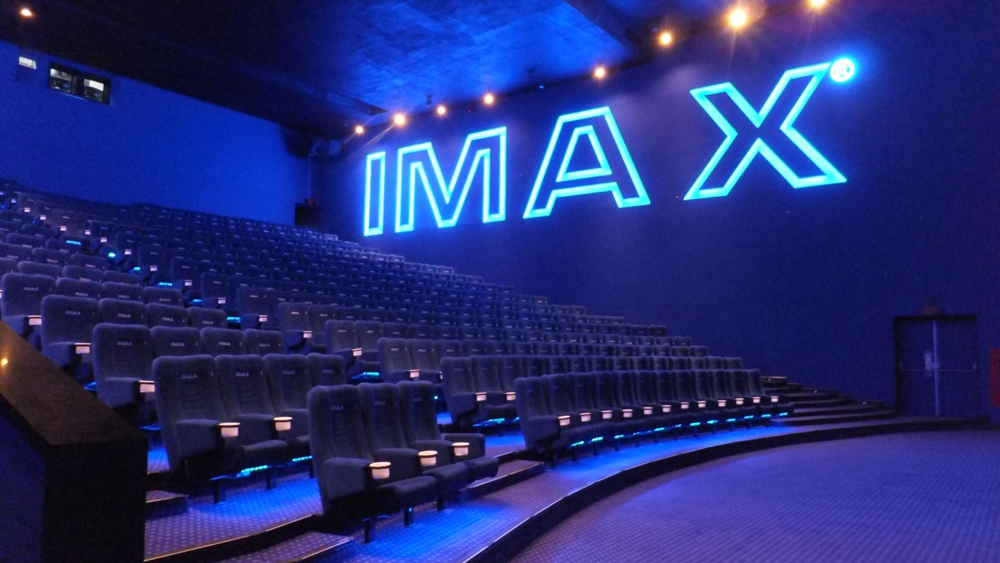
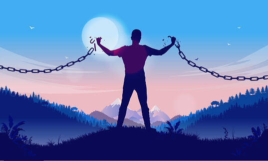

¿Quién soy yo?
Mi nombre es Omar y soy un estudiante de la carrera de Ingeniería en Sistemas Computacionales en el ITESO. En la presente página encontrarás un poco sobre mi vida, mis perspectivas sobre la misma, etc. Navega por el menú de la parte superior y conóceme bien.
¿Qué puedes encontrar en las secciones?
A lo largo de cada sección encontrarás un resumen sobre algunas áreas que considero muy importantes en mi vida.
Futuro profesional

Soy una persona a la que le gusta mucho la tecnología, pero no lo veo como algo a lo que me quiera dedicar toda la vida. Sin duda, el área tecnológica es un área de mi vida que me gusta para dedicar una gran parte de la juventud que me queda, de ello puedo extraer mucho conocimiento del funcionamiento de la industria para que eventualmente pueda emprender en mi negocio soñado y aprovechando mi conocimiento de la tecnología para impulsarlo.
Hobbies

Uno de mis hobbies más importantes es el gimnasio. Es algo que me ha dado muchas cosas buenas y que me han transformado como persona. Entré por un momento complicado en mi vida, y me ha ayudado a esforzarme mucho más tanto en el ejercicio como en mis estudios y objetivos. Muchas personas lo consideran innecesario, pero la verdad yo sigo pensando que el ejercicio es lo mejor que puedes tener en tu vida para sentirte cómodo contigo mismo.
Por otra parte, me encanta ir al cine. Sin duda lo considero una actividad muy importante y divertida. Especialmente, me gusta ir solo y los días de poca gente.
Sueños a futuro
Me encantaría independizarme lo más pronto posible y poder retribuír un poco del esfuerzo que mi familia ha hecho por mí. Vivir bajo mis términos y reglas. Igualmente, me gustaría poder formar una familia después de mis 30s.